マイクロ SD カード上に環境構築をする
TODO バージョン確認？
Phenox2 には Linux (Ubuntu ??) が搭載されており、この Linux 上で飛行制御システムやセンサーの信号処理を行っています。この Linux はマイクロ SD カード上に構築されており、ユーザーの好みに応じてカスタマイズすることが可能です。ここでは、出荷時と同等の環境をマイクロ SD カード上に構築する方法を説明します。
なお以下の環境構築には Ubuntu 14.04 LTS を使用しました。
- まず、4 GB以上の容量を持った マイクロ SD カードを用意してください。
SD カード内にデータがある場合は、環境構築を行うと全て失われてしまいますので、必要に応じてバックアップを取ってください。
- ターミナル（端末、Terminal）を開きます。
デスクトップからメインメニューを開いてください。
検索窓に "terminal" と入力してください。

ターミナルが開き、待機状態になります。
- 用意した SD カードをコンピューターに接続してください。
-
dmesgコマンドを実行して、SD カードの識別子を確認します。
画面出力の最後の方に SD カードについてのメッセージが現れます。
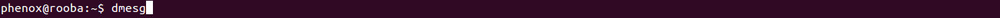
メッセージの中に、以下の写真で示すようなsdX(X部分は環境によって変化します)
の文字を探します。この例では識別子はsdbとなっています。

-
SD カードのフォーマットを行います。
次のコマンドを、sdXを先程確認した値に置き換えた上で、実行してください。
sudo dd if=/dev/zero of=/dev/sdX bs=1024 count=1
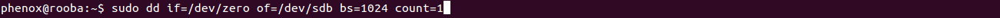
初めてsudoを実行する場合は、管理者権限のパスワードを尋ねられます。
パスワードを入力してEnterを押してください。
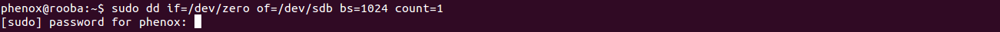
以下のような出力が出れば成功です。

- 次に SD カードにパーティションを２つ作成します。次のコマンドを実行して下さい。
（sdXを先程確認した値に置き換えてください。）
sudo fdisk /dev/sdX
ターミナルが対話モードに切り替わります。
コマンド（mでヘルプ）:と出ますのでnと入力します。

Select (default p):にpと入力します。
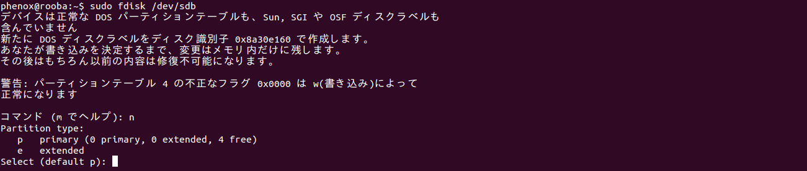
パーティション番号（1-4、初期値１）:に1と入力します。
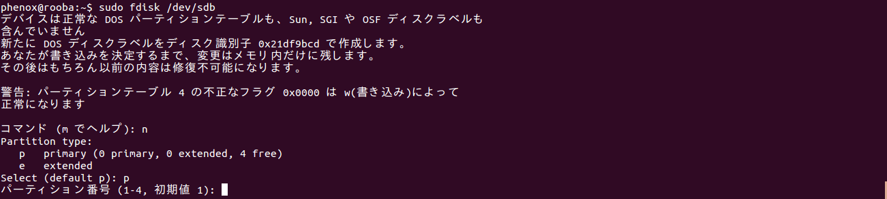
最初 セクタ （2048-XXXXXXX、初期値 2048）：には何も入力しないでEnterを押します。
初期値 2048を使いますと出力されます。 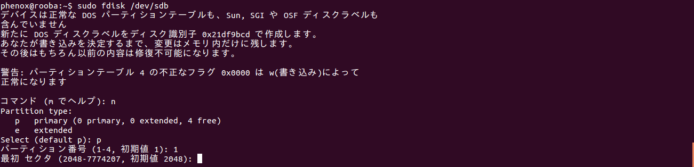
Last セクタ, +セクタ数 or +size{K,M,G} (2048-XXXXXXX, 初期値 XXXXXXX)：に+256Mと入力します。
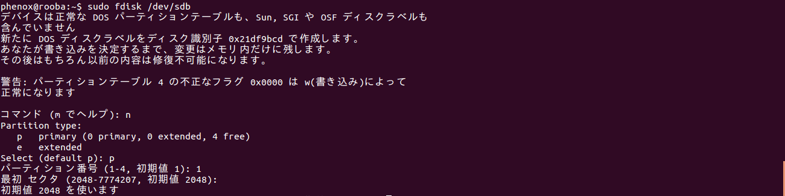
１つ目のパーティション作成が完了しました。

続けて二つ目のパーティションを作成します。
コマンド（mでヘルプ）:にnと入力し、Select (default p):にpと入力します。
パーティション番号（1-4、初期値１）:に2と入力します。
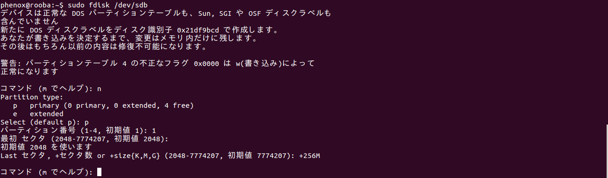
最初 セクタ （XXXXXXX-YYYYYYY、初期値 XXXXXXX）：には何も入力しないでEnterを押します。
初期値 XXXXXXXを使いますと出力されます。 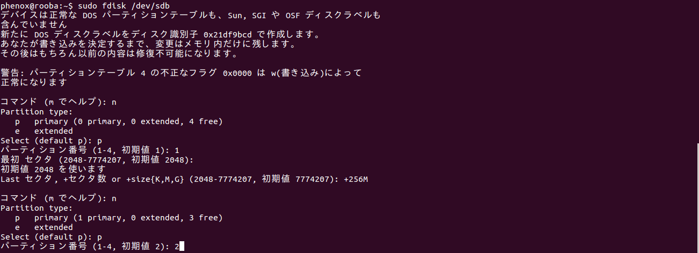
Last セクタ, +セクタ数 or +size{K,M,G} (XXXXXXX-YYYYYYY, 初期値 YYYYYYY)：に再び何も入力しないでEnterを押します。

２つ目のパーティション作成が完了しました。
次に、それぞれのパーティションのシステムタイプを変更します。
まずパーティション１のシステムタイプを変更します。
コマンド（mでヘルプ）:と出ますのでaと入力します。

パーティション番号（1-4）:に1と入力します。
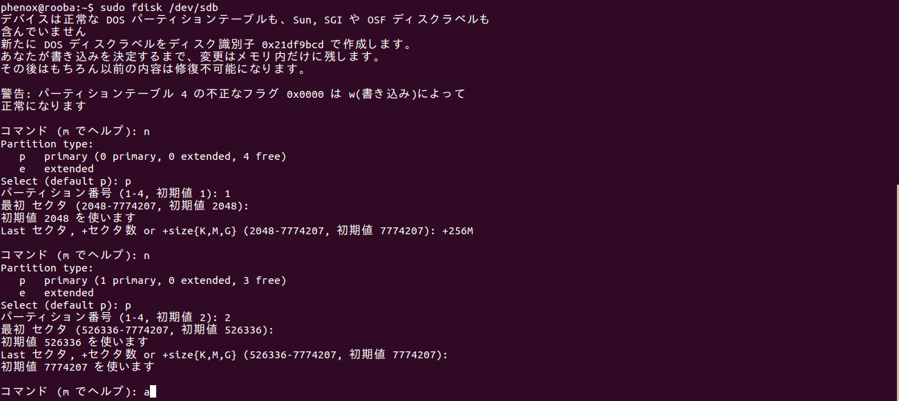
コマンド（mでヘルプ）:にtと入力します。
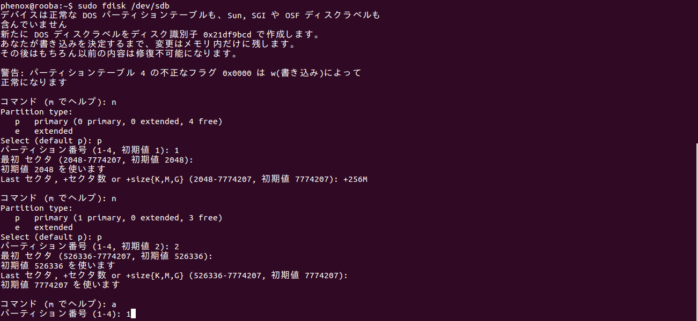
パーティション番号（1-4）:に1と入力します。
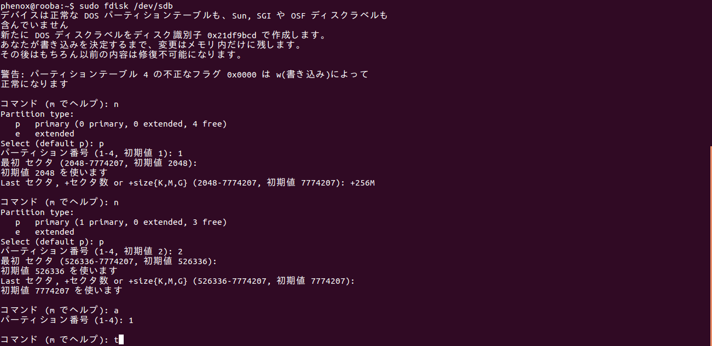
16進数コード（Lコマンドでコードリスト表示）：にcと入力します。

パーティション１のシステムタイプが変更されました。
次はパーティション２のシステムタイプを変更します。
コマンド（mでヘルプ）:にtと入力します。
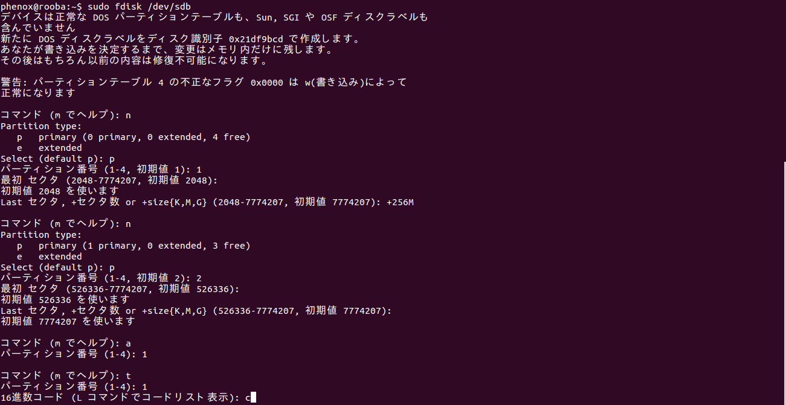
パーティション番号（1-4）:に2と入力します。
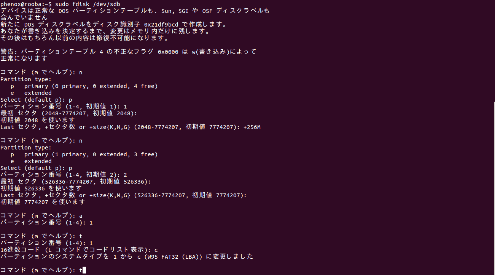
16進数コード（Lコマンドでコードリスト表示）：に83と入力します。

パーティション２のシステムタイプが変更されました。
これまでの入力を確認します。
コマンド（mでヘルプ）:にpと入力します。
次のようになっていることを確認します。(数字部分は環境によって異なります)

TODO: Check ↑どれがあってないといけないの？どれが違ってていいの？
違っていれば、Ctrl+cで操作を中断し、一連の操作を最初からやり直してください。
正しく進んでいれば w を入力し、変更を反映させます。
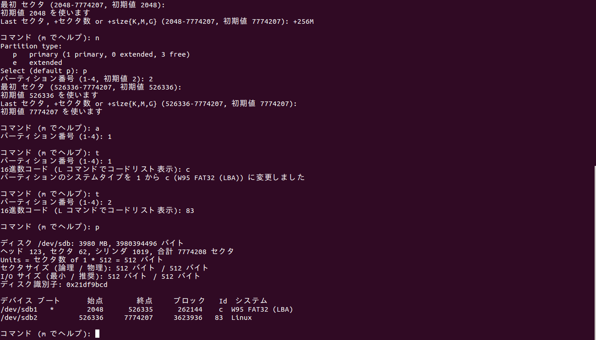
fdisk の書き込みが完了したら、SD カードを一度抜き、再び差し直します。
- 作成した２つのパーティションにファイルシステムを構築します。
次の２つのコマンドを、sdXを先程確認した値に置き換えた上で、順番に実行してください。
sudo mkfs.vfat -F 32 -n boot /dev/sdX1
sudo mkfs.ext4 -L root /dev/sdX2
注意：このコマンドでは先程作成したパーティションを指定するために、
sdXの後に1,2が付け加わっています。注意して実行してください。
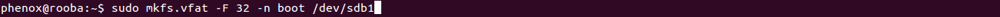


処理が完了したら、SD カードを一度抜き、再び差し直します。
- 最後に、Phenox Lab の Web サイトより、
必要なソフトウェアをダウンロードし、SD カード上に展開します。
以下のコマンドを実行して、ソフトウェアをダウンロードしてください。
wget http://phenoxlab.com/static/phenox boot master.tar.gz
wget http://phenoxlab.com/static/phenox ubuntu master.tar.gz
次に、以下のコマンドでダウンロードした圧縮ファイルを解凍します。tar zxvfp phenox boot master.tar.gz
tar zxvfp phenox ubuntu master.tar.gz
最後に、以下のコマンドで、解凍したファイルを SD カードにコピーします。
最後のコピーには時間がかかりますのでご注意ください。
cp -a phenox boot master/* /media/boot
sudo cp -a phenox ubuntu master/* /media/root
コピーが完了したら、以下のコマンドで SD カードをコンピューターから取り出します。umount /media/root /media/boot